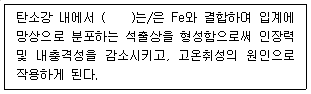

누설비파괴검사기사 (2020-06-06 기출문제)
1과목: 비파괴검사 개론
1. 다음 중 발(기)포누설검사법(Bubble Test)에서 소크시간(soak time)에 해당되는 것은?
- 검사용액을 혼합하고 적용하는데 소요되는 시간
- 검사용액을 적용한 후 관찰할 때까지 소요되는 시간
- 가압의 완료 시점과 용액의 적용시점 사이의 시간
- 시험에 소요되는 총 시간
(정답률: 알수없음)

2. 셀레늄(Selenium) 등의 반도체 뒤에 금속판을 대고 균일한 전하를 준 후 시험체를 투과한 방사선의 강도에 따라 반도체의 저항이 작아지고 전하가 이동하여 방전하게 되는데, 여기에 반대 전화를 도포하면 육안으로 확인 가능한 영상이 형성되며 이에 적절한 수지를 도포함으로써 영상을 형성할 수 있다. 이 원리를 이용하는 방법은?
- 건식 방사선 투과검사법(Xeroradiography)
- 전자 방사선 투과검사법(Electron radiography)
- 자동 방사선 투과검사법(Autoradiography)
- 순간 방사선 투과검사법(Flash radiography)
(정답률: 알수없음)
3. 동일 조건에서 모세관의 반지름이 2배로 늘어나면 모세관속 액체의 높이는 어떻게 되는가?
- 1/4로 낮아진다.
- 1/2로 낮아진다.
- 2배로 높아진다.
- 4배로 높아진다.
(정답률: 알수없음)
4. 비파괴시험 기술자의 임무라 볼 수 없는 것은?
- 시험결과의 정확한 판정
- 제조공정의 철저한 관리
- 제품의 품질보증에 대한 책임
- 시험기술 향상을 위해 꾸준한 노력
(정답률: 80%)
5. 결함의 유해성에 관한 설명 중 옳은 것은?
- 결함을 가지고 있는 구조물의 강도가 저하하는 양상은 그 결함의 형상과 방향에 따라 다르다.
- 곡면이 있는 결함은 주로 단면적의 감소에 기인하여 강도를 증가시킨다.
- 가늘고 긴 결함은 단면적의 감소 이외에 결함부의 지시 길이에 기인하여 강도를 증가시킨다.
- 표면결함과 내부결함에서 동일종류, 동일치수의 결함이면 내부결함의 경우가 표면결함보다 유해하다.
(정답률: 알수없음)
6. 다음 합금 중 형상기억 효과가 있는 것은?
- Mn - B
- Co - W
- Cr - Co
- Ti - Ni
(정답률: 알수없음)
7. 다음 ( )안에 들어갈 원소는?

- Cu
- S
- Mn
- Si
(정답률: 알수없음)
8. 실루민을 개량처리하는 이유로 옳은 것은?
- 공정점 부근의 주조조직으로 나타나는 Si 결정을 미세화 시키기 위해
- 공석점 부근의 주조조직으로 나타나는 Al 결정을 미세화 시키기 위해
- 공정점 부근의 주조조직으로 나타나는 Zn 결정을 미세화 시키기 위해
- 공정점 부근의 주조조직으로 나타나는 Sn 결정을 미세화 시키기 위해
(정답률: 알수없음)
9. 금속의 인장시험 시 측정되는 다음 항목들 중 가장 높은 응력 값을 나타내는 것은?
- 인장 강도
- 항복 강도
- 탄성 강도
- 피로 강도
(정답률: 90%)
10. 다음 중 주석에 대한 설명으로 틀린 것은?
- 화학기호는 Sn이다.
- 상온가공경화가 없으므로 소성가공이 쉽다.
- 비중은 약 10.3이고, 융점은 약 670℃ 정도이다.
- 무독성이므로 의약품, 식품 등의 포장용, 튜브에 사용된다.
(정답률: 알수없음)
11. SM45C의 탄소 함유량은 약 몇 %인가?
- 0.045
- 0.12
- 0.45
- 1.2
(정답률: 알수없음)
12. 재료의 정적 파괴응력보다 작은 응력을 장시간 동안 반복적으로 받는 경우에 파괴되는 현상은?
- 마모
- 피로
- 크리프
- 샤르피
(정답률: 알수없음)
13. Mg 합금에 대한 설명으로 틀린 것은?
- 소성가공성이 높아 상온변형이 쉽다.
- 비강도가 커서 항공기나 자동차 재료 등으로 사용된다.
- 감쇠능이 커서 소음방지 재료로 우수하다.
- 구상 흑연주철의 첨가제로 사용된다.
(정답률: 알수없음)
14. 알루미늄 합금의 질별 기호가 잘못 짝지어진 것은?
- O : 어닐링한 것
- H : 가공 경화한 것
- W : 용체화 처리한 것
- F : 용체화 처리 후 자연시효한 것
(정답률: 알수없음)
15. 순철의 냉각에서 A3 변태에 대한 설명으로 옳은 것은?
- 온도는 약 1410℃이다.
- 부피가 감소하는 변화이다.
- 결정구조의 변화를 수반한다.
- 공정 반응이다.
(정답률: 알수없음)
16. 아크 용접기의 1차측 입력이 20kVA인 경우 가장 적합한 퓨즈의 용량은? (단, 이 용접기의 전원전압은 200V이다.)
- 10A
- 50A
- 100A
- 200A
(정답률: 알수없음)
17. 다음 중 노치취성 시험방법이 아닌 것은?
- 슈나트 시험
- 코머렐 시험
- 샤르피 시험
- 카안인열 시험
(정답률: 알수없음)
18. 가스 금속 아크 용접에서 용융 금속의 이동의 형태가 아닌 것은?
- 단락 이행
- 입상 이행
- 롤러 이행
- 스프레이 이행
(정답률: 알수없음)
19. 용접 작업으로 인하여 발생하는 잔류 응력을 제거하는 방법으로 틀린 것은?
- 솔더링
- 피닝법
- 국부 풀림법
- 저온 응력 완화법
(정답률: 알수없음)
20. 저수소계 피복 아크 용접봉의 건조온도 및 건조시간으로 다음 중 가장 적합한 것은?
- 100~150℃, 30분
- 200~300℃, 1시간
- 150~200℃, 2시간
- 300~350℃, 1~2시간
(정답률: 80%)
2과목: 누설검사 원리
21. 암모니아 누설검사에서 이산화탄소(CO2) 추적가스를 이용하여 실시하는 경우 누설부위의 관찰을 위해 가시적인 붉은색 피막을 형성할 수 있도록 하기 위해 적용하는 시약은?
- 페놀프탈레인
- 그리콜
- 수산화나트륨
- 브로모크레졸
(정답률: 알수없음)
22. 헬륨누설시험에서 허위배경신호의 원인이 아닌 것은?
- 대기중의 헬륨농도가 증가할 때
- 수소와 탄화수소 농도가 오염될 때
- 질량분석기 튜브 내에서 너무 낮은 가스 압력에 의한 이온산란이 될 때
- 합성고무 가스킷(gasket) 고무호스 등, 고농도의 헬륨에 노출되었을 때
(정답률: 55%)
23. 절대압력과 같은 것은?
- 해수면의 대기 압력
- 게이지 압력에서 대기 압력을 뺀 압력
- 게이지 압력과 대기 압력을 더한 압력
- 기압계로 잰 대기 압력
(정답률: 알수없음)
24. 다음 중 절대압과 대기압의 차를 나타내는 것은?
- 분위기압
- 게이지압
- 공기압
- 음압
(정답률: 알수없음)
25. 기포누설 검사에서 침지법 용액을 선택하는 조건에 대한 설명으로 틀린 것은?
- 에틸렌 글리콜은 농도를 묽게 하여 사용한다.
- 실리콘류는 페인트 된 시험품에는 사용하지 않는다.
- 플루오르 카본은 스테인리스강에는 사용하지 않는다.
- 고상 수적방지제는 소량으로도 충분한 효과를 볼 수 있다.
(정답률: 60%)
26. 대형 시스템의 압력변화시험에는 기계적인 배기 시간은 Guthrie 방정식으로 구할 수 있다. 이 공식을 이용하여 어떤 시험계의 압력을 10Pa로 감압하는데 걸리는 시간을 식으로 옳게 나타낸 것은? (단, T는 감압시간, S는 펌핑속도, V는 계의 부피이고, 10Pa의 진공압력을 얻기 위한 배수인자는 4 이다.)
- T = 6.8V/S
- T = 9.2V/S
- T = 11.2V/S
- T = 13.8V/S
(정답률: 알수없음)
27. 헬륨질량분석기 진공후드법으로 시험체를 검사하고자 한다. 시험체의 용적이 5000m3이고 펌프의 배기속도가 초당 48000ℓ 일 때 응답시간은 얼마인가?
- 9.6초
- 104초
- 240초
- 260초
(정답률: 알수없음)
28. 다음 중 누설검사를 하는 이유로 틀린 것은?
- 누설되고 있는 유체의 종류를 알기 위해
- 누설에 기인하는 유해한 환경적 요소를 방지하기 위해
- 표준에서 벗어난 누설률과 부적절한 제품을 검출하기 위해
- 시스템 작동에 방해되는 재료의 누설 손실을 방지하기 위해
(정답률: 82%)
29. 가스 크로마토 그래피법에서 가스체적과 속도를 일정하게 하고 검지제를 착색시켜 착색도로부터 가스농도를 구하는 방법은?
- 측장법
- 측시법
- 비색법
- 비측용법
(정답률: 알수없음)
30. 기체의 유동에 영향을 미치는 인자가 아닌 것은?
- 기체의 분량
- 기체의 점도
- 압력의 차이
- 기체의 색깔
(정답률: 알수없음)
31. 누설검사의 종류에는 여러 가지 방법이 있다. 다음 중 누설시험에 가장 기본적인 원리를 이용하는 방법은?
- 추적가스를 이용하는 방법
- 화학적 변화를 이용하는 방법
- 내압 및 기밀시험을 이용하는 방법
- 제품의 물리적 특성을 이용하는 방법
(정답률: 알수없음)
32. 내압 누설 시험에서 시험압력으로 맞는 것은?
- 기압시험 최고 사용압력의 1.25배, 수압시험 최고 사용 압력의 1.5배
- 기압시험 최고 사용압력의 1.25배, 수압시험 최고 사용 압력의 1.25배
- 기압시험 최고 사용압력의 1.5배, 수압시험 최고 사용 압력의 1.5배
- 기압시험 최고 사용압력의 1.5배, 수압시험 최고 사용 압력의 1.25배
(정답률: 알수없음)
33. 압력변화시험에 의거 누설률을 측정하고자 할 때 가압가스로서 부적절한 것은?
- 공기
- 질소
- 이산화탄소
- 산소
(정답률: 알수없음)
34. 다음 중 1×10-3 std·cm3/s 정도의 누설부를 검출하기에 가장 적합한 시험 방법은?
- 버블시험법(Bubble Test)
- 할로겐 다이오드법(Halogen Diode Test)
- 헬륨질량분석법(Helium Mass Spectrometer Test)
- 압력변화측정법(Pressure change measurement Test)
(정답률: 70%)
35. 대기중의 정상적인 산소농도는 얼마인가?
- 21%
- 16%
- 10%
- 5%
(정답률: 93%)
36. 압력변화 시험의 원리 중 틀린 것은?
- 일정시간 경과한 후의 압력변화에 따라 누설량을 측정한다.
- 누설위치를 측정하기에 적합하다.
- 시험체 내부에 기체를 이용하여 가압하는 방법을 가압법이라 한다.
- 시험체 내부를 감압하고 검사하는 것을 감압법이라 한다.
(정답률: 알수없음)
37. 누설검사 시 진공시험 조건하에서 주로 발생하는 기체유동의 형태는?
- 점성 흐름(Viscous flow)
- 천이 흐름(Transitional flow)
- 분자 흐름(Molecular flow)
- 와류 흐름(Turbulent flow)
(정답률: 알수없음)
38. 가열양극 할로겐 누설검출기에 대한 설명 중 틀린 것은?
- 기본적인 기기는 할로겐 누설검출기와 휴대용 검출 프로브로 구성되어 있다.
- 검출장치 구조는 동심 실린더의 형태로 되어 있다.
- 안쪽 실린더는 내부의 열선에 의해 가열된다.
- 바깥쪽 실린더는 양전기 전위에서 작동된다.
(정답률: 알수없음)
39. 누설시험 중 누설값이 최대일 때 최대값의 37%까지 감소하는 시간을 무엇이라 하는가?
- 확산시간(diffusion time)
- 응답시간(response time)
- 세정시간(cleanup time)
- 유지시간(hold time)
(정답률: 알수없음)
40. 기포누설 시험에서 사용되는 발포액의 구비조건이 아닌 것은?
- 표면장력과 점도가 높아야 한다.
- 젖음성이 좋아야 한다.
- 건조나 증발되지 않아야 한다.
- 시험품에 영향에 없어야 한다.
(정답률: 알수없음)
3과목: 누설검사 시험
41. 할로겐 추적자 중 가장 유독성이 강하여 사용이 제한되는 물질은?
- CCl4
- R-11
- R-22
- R-114
(정답률: 알수없음)
42. 진공상자법에 대한 설명으로 틀린 것은?
- 진공상자는 적어도 1기압의 외압에 견딜 수 있어야 한다.
- 완전진공의 환경에서 검사하여야 한다.
- 시험품의 특성에 맞게 제작하여 사용한다.
- 시각보조장비를 사용하여 관찰할 수 있다.
(정답률: 알수없음)
43. 할로겐 다이오드 스니퍼 시험법에서 추적기체로 사용하지 않는 것은?
- R-11
- R-12
- R-115
- R-114
(정답률: 80%)
44. 결함의 종류에 따른 검출 방법으로 가장 옳게 연결된 비파괴검사 방법은?
- 관통결함 : 자분탐상검사, 누설검사
- 표면결함 : 누설검사, 침투탐상검사
- 관통결함 : 누설검사, 음향누설검사
- 표면결함 : 자분탐상검사, 누설검사
(정답률: 알수없음)
45. 누설시험방법의 종류가 아닌 것은?
- 기포누설시험
- 헬륨누설시험
- 압력변화시험
- 할로겐고체시험
(정답률: 알수없음)
46. 기포누설검사의 감도에 영향을 주는 인자 중 영향이 가장 적은 것은?
- 진공펌프의 사양
- 누설경계의 압력차이
- 추적가스의 종류
- 발포액의 특성
(정답률: 알수없음)
47. 할라이드 토치법의 특징 중 틀린 것은?
- 감도가 기포누설시험과 비슷하다.
- 휴대성이 좋다.
- 큰 누설근처의 작은 누설 검출이 쉽다.
- 누설의 위치를 찾을 수 있다.
(정답률: 알수없음)
48. 헬륨이 시스템에서 추적가스로 공급되어질 때 얻어진 최대신호의 63%와 동등한 출력신호를 갖는 누설검출기의 시간을 무엇이라 하는가?
- 상승시간
- 응답시간
- 주기시간
- 분해시간
(정답률: 알수없음)
49. 가열양극 할로겐법의 장점이 아닌 것은?
- 잔류된 할로겐 조성 성분에 의해 응답신호가 발생할 수 있다.
- 할로겐 추적가스에만 응답할 수 있다.
- 기름에 막혀 있는 누설을 검출할 수 있다.
- 사용이 간편하고, 휴대용이고 능률적이다.
(정답률: 알수없음)
50. 누설검사 중 침지법에 대한 설명으로 맞는 것은?
- 시험체를 검사액에 담근 후 감압한다.
- 시험체의 압력을 높여도 감도에는 영향이 없다.
- 검사용액의 표면장력은 낮아야 한다.
- 검사용액으로 물이 가장 좋다.
(정답률: 알수없음)
51. 암모니아 누설검사법에서 암모니아와 혼용할 수 있는 추적자가 아닌 것은?
- 염화수소
- 아황산가스
- 이산화탄소
- 일산화탄소
(정답률: 알수없음)
52. 헬륨 혼합기체를 포함한 용기 내부를 대기압이상으로 가압하여 용기의 외부 표면을 프로브로 주사하여 검사하는 방법은?
- 진공용기법
- 진공후드법
- 추적프로브법
- 검출프로브법
(정답률: 알수없음)
53. 할로겐다이오드 검출기 프로브시험에 사용된 가열된 양극할로겐 검출기에서 누설을 표시하는 장치로서 거리가 먼 것은?
- 누설지시기
- 조명
- 알람
- 오실로스코프
(정답률: 알수없음)
54. 가압법에 의한 강판 맞대기 용접부의 누설검사에서 다량의 미소누설 기포가 발생하였다. 1cm3의 포집관에서 포집하는데 걸린 시간이 3분이었다면 이 때의 누설률은?
- 3.33×10-2 std · cm3/s
- 3.33×10-4 Pa · m3/s
- 5.55×10-2 std · cm3/s
- 5.55×10-4 Pa · m3/s
(정답률: 알수없음)
55. 진공 침지법에 의한 기포누설검사에 사용되는 침지 용액으로 다음 중 가장 적당한 것은?
- 수도물
- 글리세린
- 미네랄 오일
- 실리콘류
(정답률: 알수없음)
56. 비누용액을 사용한 발포액법(가압법)으로 누설검사를 실시할 때 사용되는 가압가스로 적절하지 않는 것은?
- 질소(N2)
- 헬륨(He)
- 산소(O2)
- 암모니아(NH3)
(정답률: 알수없음)
57. 다음 중 침투탐상제에 의한 누설검사 특성에 해당하지 않은 것은?
- 누설위치 확인이 용이하다.
- 가압장치 등의 누설시험용 특수기구가 필요없다.
- 누설검사 방법 중 가장 간단한 방법이다.
- 모세관현상을 이용하기 때문에 두꺼운 시험품에 적용이 용이하다.
(정답률: 82%)
58. 100% 헬륨 추적가스 누설에 기인된 출력신호가 400div과 동등하고, 누설검출기 감도가 2.5×10-11 Pa·m3/s라면 누설률은? (단, 온도보정 상수는 1로 한다.)
- 6.25×10-15 Pa·m3/s
- 6.25×10-14 Pa·m3/s
- 1.0×10-8 Pa·m3/s
- 1.0×10-7 Pa·m3/s
(정답률: 알수없음)
59. 기압유동에 따른 누설에 있어서 기체유동은 다섯 가지로 나타낼 수 있다. 포함되지 않는 것은?
- 와류유동
- 층상유동
- 점성유동
- 천이유동
(정답률: 82%)
60. 다음 중 비금속의 활성원소인 할로겐족 원소에 속하는 것은?
- F
- Ba
- Ca
- Pt
(정답률: 알수없음)
4과목: 누설검사 규격
61. 보일러 및 압력용기에 대한 누설검사(ASME Sec. V, Art. 10)에서 압력 누설검사하는 기기에 적용하는 시험 압력의 한계치는?
- 설계압력의 110%
- 설계압력의 125%
- 설계압력의 160%
- 설계압력의 200%
(정답률: 알수없음)
62. 보일러 및 압력용기에 대한 누설검사(ASME Sec. V, Art. 10)에 따른 압력변화검사법에서 소형 가압된 시스템의 가압을 끝낸 후, 압력이 가해진 시스템의 온도 안정화를 위하여 유지해야 하는 최소 시간은?
- 5분
- 10분
- 15분
- 20분
(정답률: 알수없음)
63. 보일러 및 압력용기에 대한 누설검사(ASME Sec. V, Art. 10)에 따른 초음파 누설 검출기 검사법에 사용되는 검출기의 주파수 범위로 옳은 것은?
- 20 Hz ~ 20 kHz
- 20 Hz ~ 100 kHz
- 2 Hz ~ 20 kHz
- 20 Hz ~ 100 kHz
(정답률: 알수없음)
64. 용접식 강재 석유 저장 탱크의 구조(KS B6225)에 따른 강제 석유 저장 탱크의 누설 시험에서 100kPa 게이지 압력 이하의 공기압 또는 불활성 가스로 압력을 걸어 누설을 조사하는 용접부는?
- 밑판 용접부
- 부상 지붕의 폰툰 용접부
- 애뉼러 플레이트 용접부
- 개구부 보강재 용접부
(정답률: 알수없음)
65. 보일러 및 압력용기에 대한 누설검사(ASME Sec. V, Art. 10)에 다른 초음파 누설 검출기 검사법에 의한 누설시험의 절차서 요건 중 필수변수에 해당하는 것은?
- 주사 방향
- 주사 거리
- 후처리 기법
- 장비 제조사 및 모델
(정답률: 알수없음)
66. 보일러 및 압력용기에 대한 누설검사(ASME Sec. V, Art. 10)에 압력 게이지를 교정하기 위해 사용되는 교정용 계기로 규정되지 않은 것은?
- 표준 정하중 시험기(standard deadweight tester)
- 교정된 마스터 게이지(calibrated master gage)
- 버돈 튜브 게이지(bourden tube gage)
- 수은주(mercury column)
(정답률: 알수없음)
67. 질량 분석계를 이용한 압력 및 진공 용기 누출 시험 방법(KS B 5648)에서 탐지 기체로 헬륨을 사용하는 이유가 아닌 것은?
- 분자량이 작아서 작은 누출 틈이라도 누출량이 높게 주어진다.
- 대기 중에서 단위 부피당 차지하는 비율이 5×10-4%밖에 되지 않는다.
- 다른 기체와 반응 등으로 이온이 될 확률이 적다.
- 기체 중에서 가장 확산 속도가 빠르며 최소의 밀도를 가진다.
(정답률: 알수없음)
68. 보일러 및 압력용기에 대한 누설검사(ASME Sec. V, Art. 10)에서 기포누설검사-직접가압법에 규정된 내용을 기술한 것 중 틀린 것은?
- 기포형성용약은 시험 부위에서 터지지 않는 막을 형성해야 한다.
- 세제를 기포시험 용액으로 사용할 수 있다.
- 시험을 수행하기 전에 시험 압력을 최소한 15분 동안 유지해야 한다.
- 시험 후 제품의 사용을 위하여 세척이 요구될 수 있다.
(정답률: 알수없음)
69. 보일러 및 압력용기에 대한 누설검사(ASME Sec. V, Art. 10)에서 검출기 또는 시스템 교정 시 프로브의 팁(tip)을 누설표준으로부터 6mm 이내에 위치하도록 주사하는 시험법은?
- 할로겐 다이오드 검출기 프로브검사법
- 헬륨 질량분석기 검사-검출기 프로브법
- 헬륨 질량분석기 검사-추적자 프로브법
- 열전도 검출기 프로브검사법
(정답률: 알수없음)
70. 보일러 및 압력용기에 대한 누설검사(ASME Sec. V, Art. 10)에서 헬륨 질량분석기 검사-후드법의 평가 방법에 대한 설명으로 옳은 것은?
- 측정 누설률 Q가 헬륨의 1×10-7 Pa·m3/s 이하이면 시험한 기기를 합격으로 한다.
- 측정 누설률 Q가 헬륨의 1×10-6 Pa·m3/s 이하이면 시험한 기기를 합격으로 한다.
- 측정 누설률 Q가 헬륨의 1×10-5 Pa·m3/s 이하이면 시험한 기기를 합격으로 한다.
- 측정 누설률 Q가 헬륨의 1×10-4 Pa·m3/s 이하이면 시험한 기기를 합격으로 한다.
(정답률: 알수없음)
71. 보일러 및 압력용기에 대한 누설검사(ASME Sec. V, Art. 10)에 따른 할로겐 다이오드 검출기 프로브검사법에서 추적가스의 농도에 대한 설명으로 옳은 것은?
- 시험압력에서 최소한 체적의 10%는 되어야 한다.
- 설계압력에서 최소한 체적의 10%는 되어야 한다.
- 시험압력에서 최소한 체적의 15%는 되어야 한다.
- 설계압력에서 최소한 체적의 15%는 되어야 한다.
(정답률: 알수없음)
72. 질량 분석계를 이용한 압력 및 진공 용기 누출 시험 방법(KS B 5648)에 따른 진공법 중에서 아주 미세한 누출을 검지할 때 사용하는 검사법은?
- 직류 헬륨 누출 검지법
- 역류 헬륨 누출 검지법
- 헬륨 분사법
- 적분법
(정답률: 알수없음)
73. 용접식 강재 석유 저장 탱크의 구조(KS B 6225)에서 부상 지붕 배수 설비는 조립한 후 몸통의 물 채우기 시험 전에 몇 kPa의 게이지 압력 정도의 압력으로 누설을 조사하는가?
- 100 kPa
- 200 kPa
- 300 KPa
- 400 kPa
(정답률: 알수없음)
74. 보일러 및 압력용기에 대한 누설검사(ASME Sec. V, Art. 10)에 따른 기포누설검사-진공상자법에서 표준 기법으로 검사를 수행할 때, 검사체의 표면 온도 범위는?
- 0℃ ~ 30℃
- 0℃ ~ 50℃
- 5℃ ~ 30℃
- 5℃ ~ 50℃
(정답률: 알수없음)
75. 보일러 및 압력용기에 대한 누설검사(ASME Sec. V, Art. 10)에서 헬륨 질량분석기 검사-후드법에 의해 시험을 실시하였을 경우 누설률이 허용 범위를 초과했을 때의 조치 사항은?
- 기포누설검사-직접가압법으로 재시험 한다.
- 헬륨 질량분석기 검사-추적자 프로브법으로 재시험 한다.
- 초음파 누설 검출기 검사법으로 재시험 한다.
- 헬륨 질량분석기 검사-검출기 프로브법으로 재시험 한다.
(정답률: 알수없음)
76. 질량 분석계를 이용한 압력 및 진공 용기 누출 시험 방법(KS B 5648)에서 어떤 측정 대상의 기체 누출률을 알고자 할 때 실제로 사용할 기체 대신 편리한 다른 기체로 누출률을 측정하게 되는 경우가 많다. 이 때 주로 사용되는 다른 기체는?
- 이산화탄소
- 암모니아
- 질소
- 헬륨
(정답률: 알수없음)
77. 용접식 강재 석유 저장 탱크의 구조(KS B 6225)에 따라 석유 저장 탱크의 밑판 및 애뉼러 플레이트의 용접부에 대한 누설 검사 방법은?
- 압력변화검사법
- 기포누설검사-직접가압법
- 기포누설검사-진공상자법
- 헬륨 질량분석기 검사-후드법
(정답률: 알수없음)
78. 질량 분석계를 이용한 압력 및 진공 용기 누출 시험 방법(KS B 5648)에 규정된 가압법에서 기체를 잡아 내는 탐색자(probe) 역할을 하는 것은?
- 슬릿
- 조절판
- 스니퍼
- 컬렉터
(정답률: 알수없음)
79. 보일러 및 압력용기에 대한 누설검사(ASME Sec. V, Art. 10)에서 기포누설검사-진공상자법의 적용범위에 대한 설명으로 옳은 것은?
- 압력 경계부의 국부 부위에 밀도차를 만들어 누설 위치를 검출한다.
- 압력 경계부의 국부 부위에 밀도차를 만들어 누설량을 검출한다.
- 압력 경계부의 국부 부위에 압력차를 만들어 누설량을 검출한다.
- 압력 경계부의 국부 부위에 압력차를 만들어 누설 위치를 검출한다.
(정답률: 알수없음)
80. 보일러 및 압력용기에 대한 누설검사(ASME Sec. V, Art. 10)에서 기포누설검사-직접가압법의 문서화 된 절차서의 요건에 포함하지 않아도 되는 것은?
- 압력유지시간
- 압력게이지
- 시험압력
- 시험체의 재질 및 규격
(정답률: 알수없음)
이유: 발(기)포누설검사법은 검사용액을 적용한 후 일정 시간이 지난 후 발생하는 기포의 크기와 수를 관찰하여 검사하는 방법이다. 이 때, 검사용액을 적용한 후 관찰할 때까지 소요되는 시간이 소크시간이 된다. 따라서 정답은 "검사용액을 적용한 후 관찰할 때까지 소요되는 시간"이다.